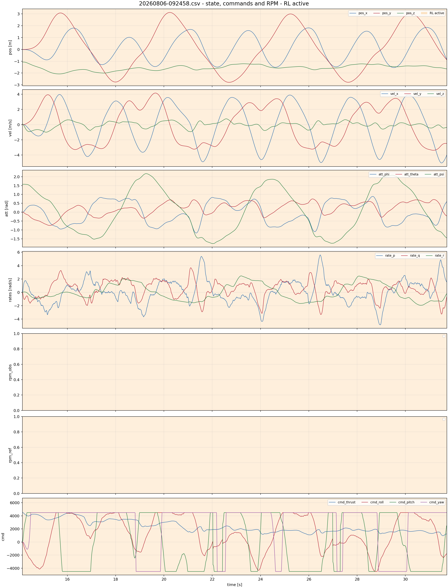
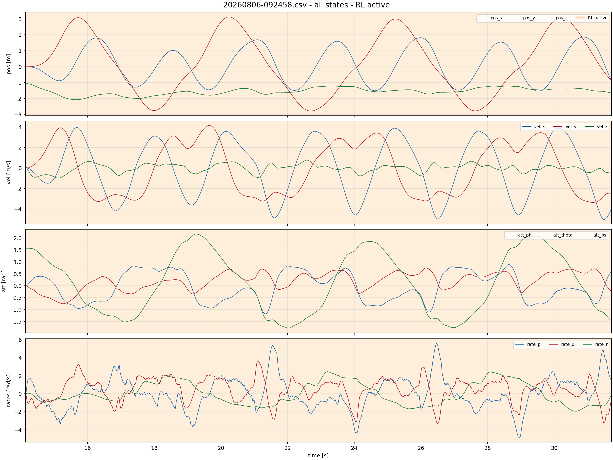
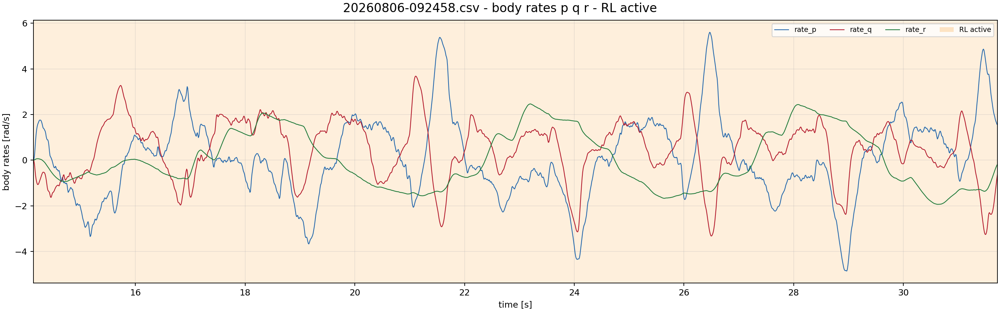
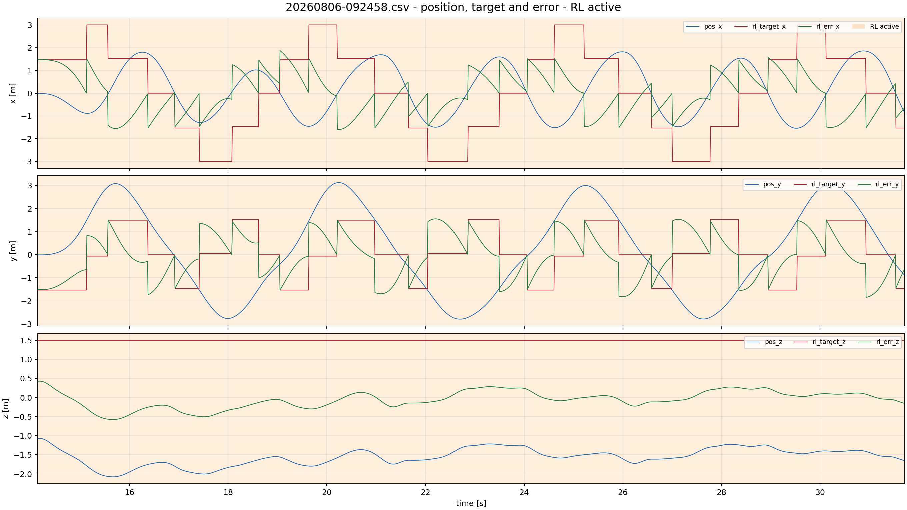
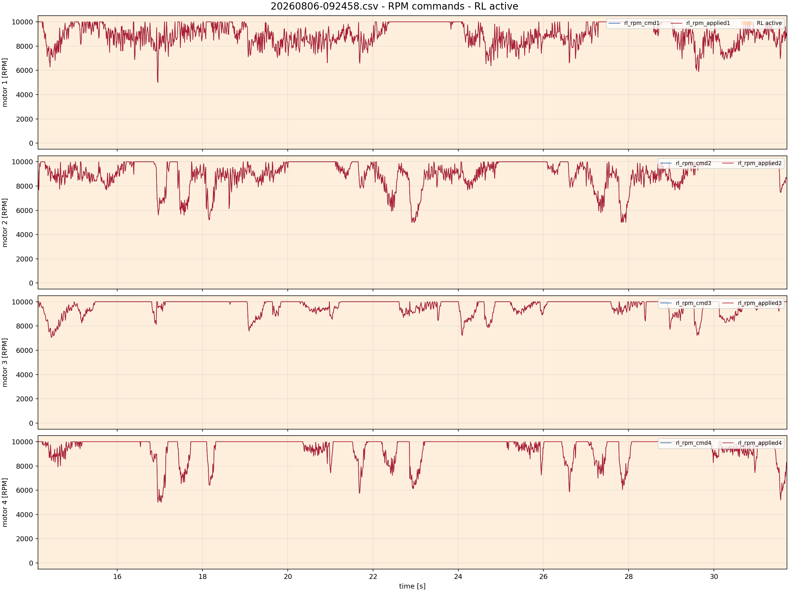
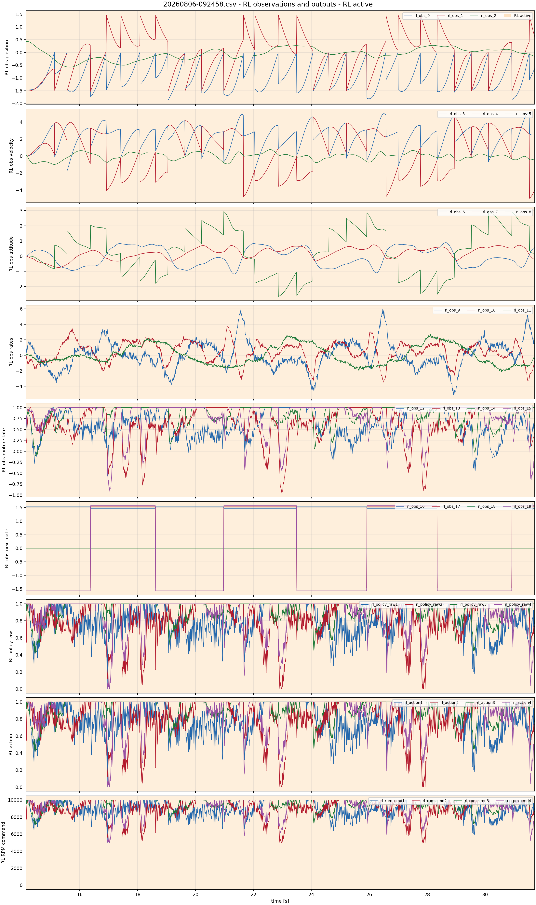
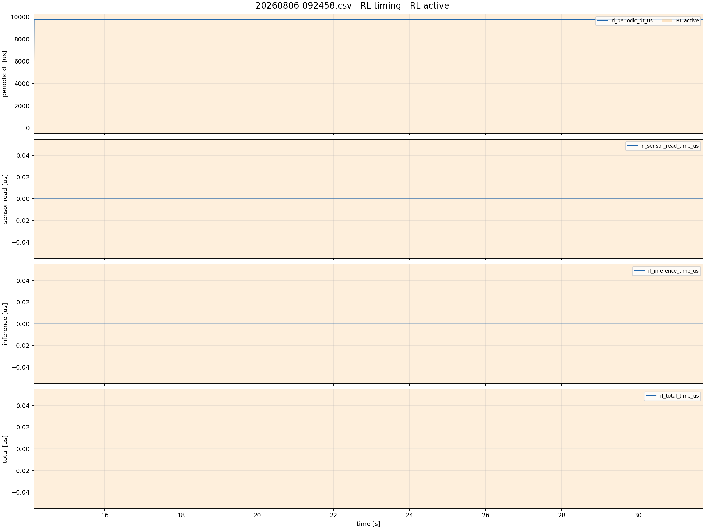
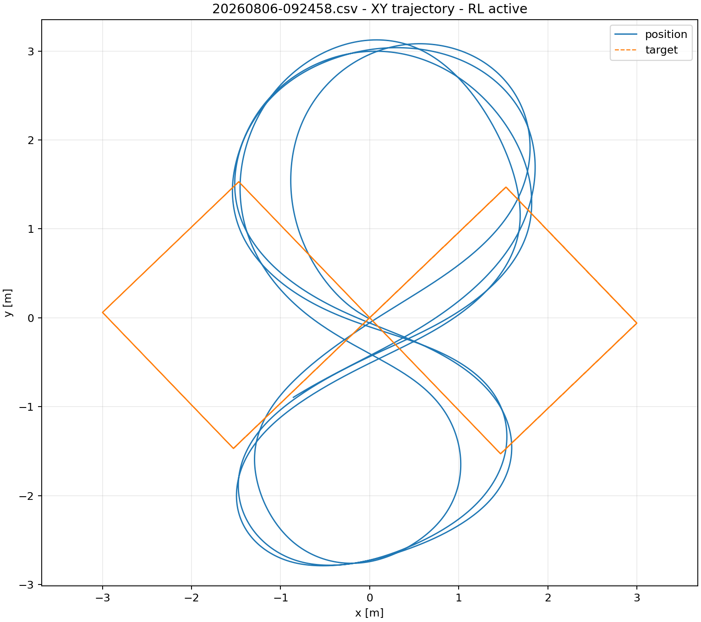
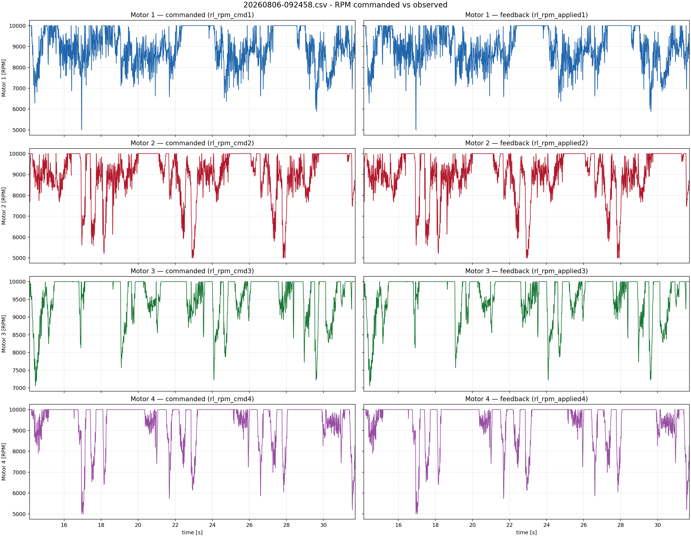

20260806-092458.csv
RL-active intervals: [(14.139144, 31.715374)]
Airborne window uses estimated ground z=-0.035 m and 0.10 m clearance.
state, commands and RPM - RL active

all states - RL active

body rates p q r - RL active

position, target and error - RL active

RPM commands - RL active

RL observations and outputs - RL active

RL timing - RL active

XY trajectory

RPM commanded vs observed
